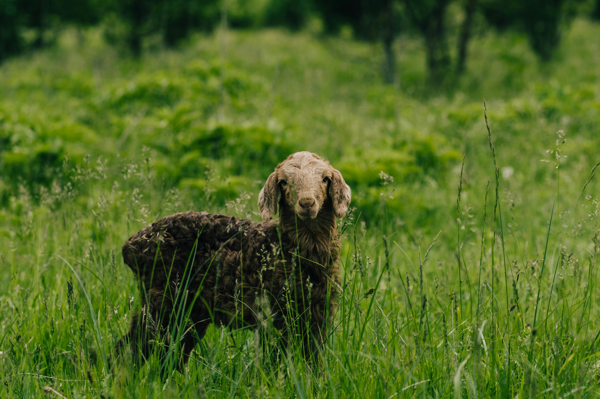
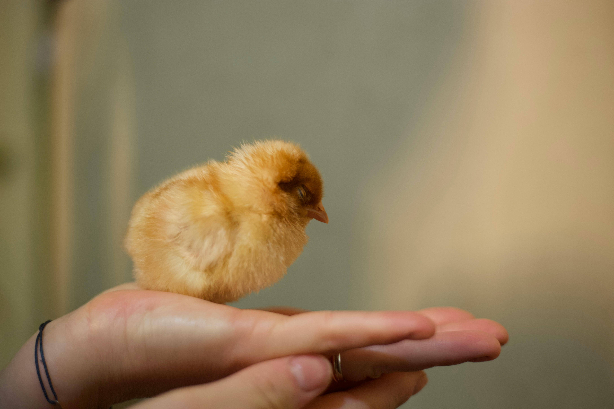
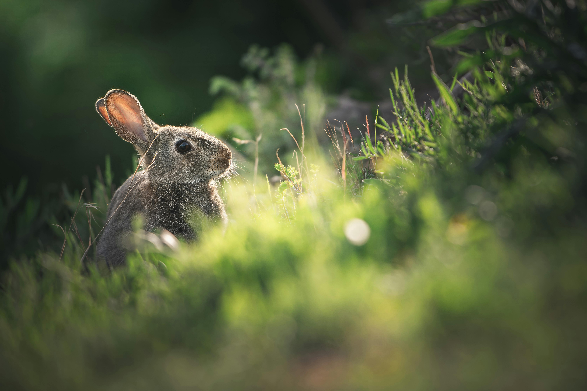
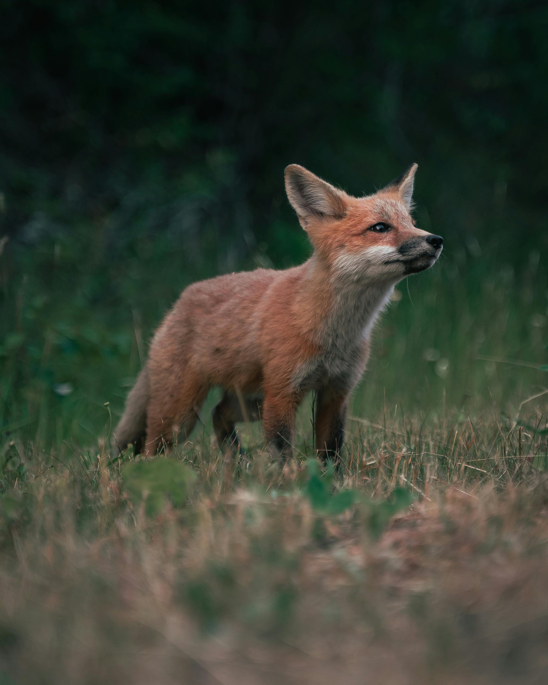

Skogsgetens historia
Historien om skogsgeten sträcker sig långt tillbaka i tiden. 900 talet är första gången den blev dokumenterad.
Läs mer

Från kyckling till kyckling
Den gula kycklingen är det enda djuret som lyckades överleva istiden
Läs mer

Kaninen, naturens lyckodjur
Vi har alla lyckodjur som katter och hundar, skogens är kaninen.
Läs mer

Räv? En röd hund
Räven raskar över isen. De är så söta, och om den tar sig fram och nosar, då ska man akta sig.
Läs mer